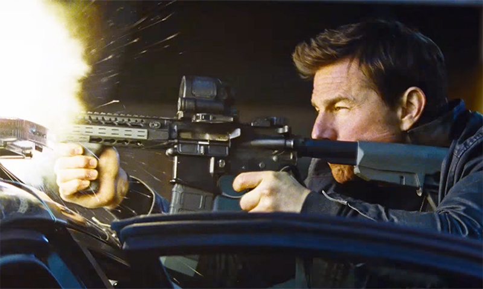

Jack Reacher - Không Quay Đầu (2016)
12/12/2016 12:00
"Jack Reacher: Không quay đầu" đem đến cho khán giả những pha hành động máu lửa, những tình tiết gây cấn nghẹt thở đã từng là chuẩn mực của bất kỳ bộ phim hành động nào của thập niên 90. Nó lôi cuốn người xem bởi nội dung đơn giản nhưng ý nghĩa, diễn xuất xuất sắc mà không cần kỹ xảo, âm thanh ấn tượng nhưng không quá lố. Tuy nhiên chúng ta đang ở trong thế kỷ 21, và bấy nhiêu chưa chắc đã đủ để tạo nên một phim hành động xuất sắc.

"Jack Reacher: Không quay đầu", tên tiếng Anh là "Jack Reacher: Never Go Back" hay còn được biết đến là "Jack Reacher 2", là phần tiếp theo của phim Jack Reacher năm 2012. Bản thân series phim này dựa trên bộ tiểu thuyết về nhân vật Jack Reacher của nhà văn Lee Child. Nội dung phim dựa theo cuốn tiểu thuyết cùng tên, đưa người xem theo chân thiếu tá đã giải ngũ Jack Reacher (Tom Cruise) trong cuộc điều tra trả lại sự trong sạch cho thiếu tá Turner (Cobie Smulders). Từ đó anh khám phá ra một âm mưu khủng khiếp trong quân đội, khiến không biết bao nhiêu người phải mất mạng.
Đối với những bạn yêu thể loại phim hành động cổ điển, trong đó có mình, "Jack Reacher: Không quay đầu" là một bộ phim tuyệt vời, nơi bạn có thể tìm thấy những tất cả yếu tố để tạo thành một bộ phim hành động hay "chuẩn mực của thập niên 90". Đó là sự lôi cuốn của những pha hành động nối tiếp hành động, khiến bạn không thể rời mắt khỏi màn hình. Đó là sự dồn dập của những tình tiết gây cấn nối tiếp tình tiết gây cấn, khiến bạn không thể ngừng hồi hộp. Đó là sự hài hước được đưa vào một cách khéo léo trong cử chỉ và câu nói để nổi bật cái duyên của nhân vật, khiến bạn phải nhoẻn miệng cười một cách bất ngờ. Đó là tính giải trí cao, giúp bạn có những giây phút thư giãn sướng mắt đã tai mà không vướng bận gì khi ra khỏi rạp.
"Jack Reacher: Không quay đầu" có thể xem là một trong những bộ phim thể hiện thương hiệu của Tom Cruise, một trong những ngôi sao phim hành động thuần tuý xuất sắc nhất của Hollywood vào thời điểm hiện tại. Qua khả năng diễn xuất của anh, bạn sẽ thấy được một nhân vật Jack Reacher phong trần nhưng ẩn sau vẻ mặt điềm tĩnh ấy là rất nhiều xúc cảm. Phải nói rằng trong nền điện ảnh đương đại khi mà nhan sắc thường được đề cao hơn là tài năng (dẫu thật ra thì đẹp vẫn có thể xem là tài năng trong trường hợp của một nữ hoàng nội y mà có lẽ ai cũng biết), chẳng mấy phim hành động sử dụng góc quay cận cảnh vào khuôn mặt nhân vật nhiều như "Jack Reacher: Không quay đầu". Và dĩ nhiên, không nhiều diễn viên hiện tại có thể khiến những cảnh quay đó khơi dậy cảm xúc của người xem như Tom Cruise. Bạn diễn của anh là Cobie Smulders dù đẳng cấp chênh lệch khá nhiều nhưng vẫn có thể xem là tròn vai, và quan trọng nhất là khuôn mặt xinh tươi đúng chất đoá hồng trong biển súng. Trong khi đó ngôi sao trẻ Danika Yarosh cũng tương đối thành công với vai diễn của mình, đem cái một luồng gió mới trong một bộ phim vốn đại diện cho những giá trị xưa cũ.
Tóm lại, "Jack Reacher: Không quay đầu" là một bộ phim hành động thuần tuý dành cho những bạn yêu thích thể loại phim hành động cổ điển, hoặc đơn giản là muốn có những phút giây giải trí nhẹ nhàng thư giãn (có kèm sự tăng động và hồi hộp). Nhưng nếu bạn đã quen với phim hành động hiện đại sâu sắc và nhiều thông điệp khiến người xem phải suy ngẫm thì... cũng đáng để ra rạp xem thử vì sao mà Tom Cruise đã chiếm được trái tim của hàng triệu tín đồ điện ảnh trên thế giới. Dẫu về tổng thể phim có thể không hợp gu của bạn, diễn xuất của Tom Cruise trong phim vẫn thuộc hàng chuẩn mực của một ngôi sao hạng A Hollywood. Chúc các bạn vui vẻ!
Lý
-

Trailer coi bộ hay.
on December 5th, 2016 -
Wow! Phải đi xem thôi!
on December 5th, 2016 -

Phim chắc hay đấy!
on December 5th, 2016